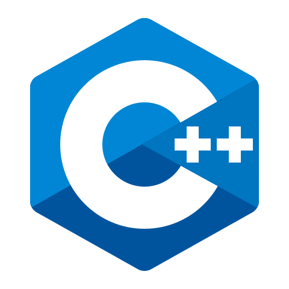

Overlord
-

- 
Final project of my Master's Degree in Video Game Development
As a team of six students, we created Overlord, a stealth game where Heroes must infiltrate the camp of the Overlord,
destroy the buildings without being spotted.
The Overlord places minions at the beginning of each round to guard and patrol the camp.
They will help him find and subjugate the Heroes.
Above is a video presentation of the project.
Game design
After brainstorming ideas with the team, I came up with a plot and discussed it with the rest of the team. A few tweaks were made, and we started prototyping. Some features were removed, others were added, and we had a plan! The design changed as new ideas emerged with development and testing.
Team responsabilities
I was animating the project planification. We had daily meetings where we could keep track of the sprint advancement and help each other if needed. At the end of two sprints I animated a retrospective where we discussed our workflow and the atmosphere in the team. The goal of those meetings was to improve both for the next sprints to come.
Procedural generation
I worked on the procedural generation of the camp. Its goal is to improve replayability by having a different terrain at each game. The walls are obstacles for the Heroes infiltration. The paths guide them through the camp. Buildings are a second objective for the Heroes and affect the income of the Overlord. Changing the position of those elements can affect the gameplay a lot. To keep some structure, the procedural generation has some constraints. I implemented an algorithm close to the Wave Function Collapse. It allows for a random generation with constraints such that the whole structure is coherent. I have added a few custom rules to have maps that fit our needs. You can learn more in the video presenting the game (at 5:22).
Artificial Intelligence
I have worked on the patrol system of the minions. There are two main challenges. First, the minion placement. The Overlord can place minions wherever on the map. The path they use to patrol depends on the unit type and the spawning position of the minion. Second is the procedural generation. The map changes every game, so the position of the points of interest are not fixed either. They are also part of the procedural generation. The front of the buildings, the bottlenecks created by the walls and some paths are registered as points of interest and will be added to the patrol path of the unit.
Backend
I set up a backend system that collects data about the players and the games. Each player is connected to the backend with an identification token. Data can then be collected during the games. We can know the player's favorite weapon, win rate, kill and death count, number of crystals collected... All that information can then be used to balance the game or create a matchmaking system.